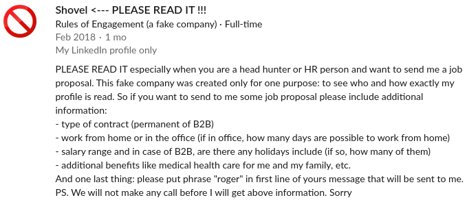

Profil na LinkedIn - co widzą rekruterzy?
 Wykorzystano zdjęcie autorstwa Francesco Ungaro z Pexels
Wykorzystano zdjęcie autorstwa Francesco Ungaro z Pexels
Zastanawiałeś się kiedyś, co widzi rekruter, przeglądając Twój profil na LinkedIn? Ja sam kiedyś zastanawiałem się, jak powinien wyglądać profil, aby przyciągnąć uwagę rekruterów i mieć szansę na ciekawsze oferty pracy. Jeśli i Ty czasem nad tym się zastanawiasz, zapraszam do dalszej lektury. Wnioski, do jakich doszedłem oraz mój sposób badania rekruterów może Cię zaskoczyć, szczególnie jeśli dopiero zaczynasz swoją karierę w branży IT (choć i starzy wyjadacze mogą się czegoś ciekawego dowiedzieć).
Zdaję sobie sprawę, że cały artykuł opisuje perspektywę osoby, która dostaje zbyt dużo ofert i po prostu się czepia, ale wnioski z tego artykułu powinny pomóc zarówno osobom poszukującym pracy, jak i również powinny pomóc osobom rekrutującym w skuteczniejszym poszukiwaniu pracowników. Mam przynajmniej taką nadzieję.
Idea¶
Skąd wzięła się idea dotycząca przetestowania rekruterów? Mógłbym powiedzieć, że testerem nie jestem tylko w branży IT, ale lubię sprawdzać również różne inne rzeczy, które mam w swoim otoczeniu. W tym przypadku akurat nie chodziło o rzecz, a raczej o to, co dzieje się na moim profilu na tym portalu, czyli o wysyp ofert współpracy, które nijak do mnie nie pasują. Z jednej strony zapewne swój udział w tym ma sama pandemia, w której trakcie firmy zdecydowanie wolą zatrudniać osoby z większym doświadczeniem. Z drugiej, ktoś mógłby powiedzieć, że mój profil delikatnie wprowadza w błąd (rozwinę tę myśl poniżej). Jaki jednak powód by to nie był, oferty powinny zachęcać do odpowiedzi na nią, a nie zniechęcać.
Metodologia¶
Skoro już wiedziałem, że chce przetestować rekruterów, musiałem wykombinować jak ich przebadać tak, aby nie byli świadomi, że biorą udział w badaniu. Dlaczego tak? W fizyce istnieje pojęcie efektu obserwatora, które mówi, że akt obserwacji wpływa na obserwowane zjawisko. W przypadku mojego mini badania, gdyby rekruterzy wiedzieli, że ich obserwuję, zupełnie inaczej patrzyliby na mój profil, a ich komunikacja ze mną wyglądałaby inaczej. Jak więc to zrobić?
Jedyne narzędzie, jakie miałem do dyspozycji to mój profil na LinkedIn (możesz mnie dodać do swoich znajomych). Profil taki, zbudowany jest z wielu sekcji dotyczących m.in. historii zatrudnienia, poznanych technologi, itp. Jak więc wykorzystać profil, tak aby służył do przetestowania rekruterów?
Przygotowanie profilu na LinkedIn¶
Tak naprawdę, to ze swoim profilem nie musiałem za dużo robić. Powody są 2:
- profil aktualizuję dosyć często i robię to w momencie, kiedy zachodzą jakieś zmiany bądź to na zajmowanym stanowisku, bądź to brałem udział w jakiejś ciekawej inicjatywie i warto o niej wspomnieć,
- jak już wspomniałem, mój profil wprowadzał rekruterów w błąd, jeśli bardzo pobieżenie na niego patrzą.
Zacznijmy więc od tego, gdzie w moim profilu są błędy, a gdzie są informacje, pokazujące czym tak naprawdę się zajmuję.
Dwa podstawowe błędy w moim profilu to:
- nazwa obecnie zajmowanego stanowiska, która sugeruje, że jestem Python Developerem,
- w tagach opisujących moje umiejętności znajdują się technologie, z którymi od bardzo dawna nie mam styczności.
Najwięcej informacji o mnie zawiera historia zatrudnienia. Według mnie to jest miejsce, z którego w każdym CV można wyczytać najwięcej informacji, czym dana osoba się zajmowała oraz jakie ma doświadczenie. O to też najczęściej pytają rekruterzy podczas rozmów kwalifikacyjnych (opowiadanie na temat mojego doświadczenia zawodowego potrafi zająć nawet połowę czasu przeznaczonego na rozmowę z przyszłym menadżerem i/lub osobom z działu HR). Wiedząc o tym, opis dotyczący zakresu obowiązków u poszczególnych pracodawców jest dosyć dobrze opisany w moim profilu. Aby się dodatkowo przekonać, czy rekruterzy czytają z uwagą tą sekcję, zamieściłem tam pewnego nieistniejącego pracodawcę, a w opisie przy nim ukryłem kilka prostych wiadomości. Jak wygląda wspominany wpis, widać na poniższym zrzucie ekranu.

Zauważ, że proszę osobę, która wysyła mi ofertę pracy, aby napisała w 1 wiadomości słówko roger. Dzięki temu będę wiedział, że zaznajomiła się dosyć dokładnie z moim profilem.
Prowadzenie statystyki¶
Skoro już przygotowałem to wszystko, pozostało sporządzić statystykę. W tym celu stworzyłem sobie prosty formularz przy użyciu Google Forms, który wypełniałem danymi, przy każdej ofercie, jaką otrzymywałem na LinkedIn. Formularz ten zawierał kilka prostych pytań, które dotyczyły rzeczy, o których podanie prosiłem na powyższym zrzucie ekranu, a które dobra oferta i tak powinna zawierać. Dodatkowo wpisywałem imię i nazwisko rekrutera, abym mógł w dowolnym momencie wrócić do danej oferty oraz informacje o proponowanym stanowisku i informację dotyczącą pojawienia się słowa roger w pierwszej wiadomości. Pierwotne założenie było takie, aby po 50 odpowiedziach zakończyć sporządzanie statystyki, jednak w pewnym momencie utknąłem na 47 odpowiedziach i przez ponad tydzień nie wpadła ani jedna oferta. W momencie, kiedy zaczęły one znów spływać, zorientowałem się, że mam blisko 65 odpowiedzi, a oferty ciągle spływały, więc postanowiłem dobić do 100 odpowiedzi. W tym momencie podjąłem również dodatkową decyzję, aby nie uwzględniać w statystyce ofert spływających do mnie z 2 firm, które wyglądają jakby były po prostu wysyłane przez bota, albo tanią siłę roboczą z dalekiego wschodu. W pierwszej połowie takich odpowiedzi jest raptem 3, więc postanowiłem je po prostu zachować.
Wyniki oraz wnioski z obserwacji¶
Przyjrzyjmy się wspólnie, jakie były wyniki tego mini badania oraz jakie wnioski można z tego wyciągnąć. Zacznijmy od czegoś prostego
Średnia ilość ofert¶
Jak już pisałem wcześniej, prowadziłem statystykę do momentu, w którym znalazło się w niej 100 wpisów. Czas gromadzenia danych to 122 dni, z czego aż 40 było dniami wolnymi (co nie znaczy, że w weekendy nie zdarzało mi się znaleźć oferty w skrzynce odbiorczej). Uśredniając dane, tylko dla dni roboczych, wychodzi, że średnio w ciągu jednego dnia pojawiało się 1,22 oferty, co dawało średnio 6,1 oferty tygodniowo oraz 26,84 oferty miesięcznie (przy założeniu, że mamy średnio 22 dni robocze w miesiącu). Dlaczego to tak istotne?
Oferta, a rozmowa telefoniczna¶
Praktycznie każdy rekruter, po przesłaniu oferty chciał umówić się na rozmowę telefoniczną. Podczas takiej rozmowy poruszane są następujące tematy:
- przedstawienie oferty,
- przedstawienie firmy,
- nasze pytania uszczegóławiające (np. wysokość zarobków, forma współpracy, itp.),
- nasza opinia o ofercie,
- przedstawienie procesu rekrutacji,
- lub pytania o nasze preferencje dotyczące przyszłych ofert.
Taka rozmowa trwa około 30 minut. Jeśli pomnożymy to przez średnią ilość ofert w miesiącu, wychodzi nam ponad 13 godzin na rozmowy, które w 99% kończą się niczym. Te 13 godzin (po odliczeniu przerw na kawę i maile), to praktycznie 2 dni robocze za które nikt Ci nie zapłacił. Nie wiem jak Ciebie, ale mnie nie stać na taki luksus.
Jakość ofert¶
Dlaczego więc napisałem, że zdecydowana większość ofert kończy się niczym? Spójrzmy na poniższy wykres
Otrzymane oferty podzieliłem na 3 kategorie:
- tylko stanowisko - to oferty, w których w 1 wiadomości była tylko nazwa stanowiska, brak był informacji o formie współpracy, miejscu lub informacji pracy zdalnej, wysokości zarobków itp.
- pusta oferta - można by ją zaliczyć do powyższych, z czym tutaj nawet nie było informacji, o jakie stanowisko chodzi, a wiadomości zawierały coś w rodzaju “praca w młodym i dynamicznym zespole”,
- pozostałe - to oferty, które niosły ze sobą jakiś sensowny przekaz i nie trzeba było się o wszystko dopytywać, to czy był on dopasowany do mojego doświadczenia, to już inna sprawa.
Zauważ, że praktycznie połowa wiadomości powinna po prostu trafić do kosza, gdyż zmusza potencjalnego kandydata do napisania wiadomości, aby dowiedzieć się czegokolwiek. Słaba to reklama i zachęta. O potencjalnych powodach takiego stanu rzeczy napiszę troszkę dalej.
Roger¶
Zacznijmy od najciekawszego, czyli od słówka roger. No więc zobaczmy, ilu rekruterów dotarła do tej wiadomości.
Zaskoczenie? Przerażenie? A może lekki ubaw?
Jako ciekawostkę podam, że pierwsza wiadomości, w której zobaczyłem to słowo, dotarła do mnie po 10 dniach, od momentu jak zacząłem tworzyć statystykę i była 7 ofertą w kolejności.
Proponowane stanowisko¶
Skoro już wiemy, że rekruterzy raczej średnio przykładają się do pracy, a moje obecnie zajmowane stanowisko również może wprowadzać w błąd, zobaczmy więc, jak to wpłynie na proponowane stanowiska.
Słowem komentarza, dlaczego wpadłem w poszczególne kategorie:
- programista - no bo jestem Senior Python Developerem, a to, że na końcu jest jeszcze dopisane (in test) to już raczej nie ma znaczenia,
- DevOps - no bo w wymaganiach na to stanowisko występuje Python, a że w nazwie obecnego stanowiska mam to słowo w nazwie, to całą resztę sobie dopowiedz,
- tester - no bo jednak ktoś doczytał to (in test),
- nie wiem - no bo nie wiem (w akapicie jakość ofert było co prawda 3, a tu 4, co wynika z pewnej ciekawostki, ale o tym przeczytasz pod sam koniec).
Pomijając lekko prześmiewczy ton powyższych podpunktów, można by powiedzieć, że nie ma aż takiej tragedii. Przecież 1/3 ogłoszeń dotyczy testowania, a prawie cała reszta dotyczy Pythona. Ale czy aby na pewno? Odrzućmy oferty na DevOpsa oraz te wpadające do kategorii nie wiem i zobaczmy na początek, jak się sprawy mają w przypadku ofert na programistę.
Programista Pythona, ale czy aby na pewno?¶
Nie ma takiej tragedii. O ile C/C++ można byłoby usprawiedliwić tym, że mam tę technologię w sekcji dotyczącej umiejętności (choć to mocno dyskusyjne), o tyle, co w tym zestawieniu robi język Ruby, to już nie mam zielonego pojęcia.
No to może lepiej będzie w przypadku propozycji testerskich?
Tester, ale jaki?¶
Tu też nie jest jakoś mega super. O ile oferty związane z Pythonem oraz testowaniem manualnym i wydajności są usprawiedliwione, o tyle Java i JavaScript, zupełnie nie wpisują się w moje doświadczenie zawodowe. Tak wiem, powinienem się w końcu tego Cypressa nauczyć, ale nie tylko testowaniem stron www testerzy się zajmują.
Przyjrzyjmy się teraz temu, jakie informacje poza nazwą stanowiska znajdowały się w przesyłanych ofertach.
Widełki płacowe¶
Jeden z największych motywatorów do zmiany pracy, jeśli w obecnej nic nas nie uwiera.
Dobrze nie jest, choć wielkiej tragedii też nie ma. Liczyłbym na odwróconą proporcję, ale trzeba zdawać sobie sprawę, że brak widełek płacowych w ogłoszeniu wynikać może z bardzo wielu czynników, choć jeśli pracodawcy zależy na zatrudnieniu dobrego pracownika, to raczej nie ma problemu z podawaniem stawek.
Forma współpracy¶
Pomijając niewiadome, widać, że rynek podąża w kierunku zatrudnienia na podstawie umowę B2B. Nie wiem, czy wynika to tylko z faktu pandemii (elastyczność w przypadku ewentualnego zwolnienia), czy raczej z wygody oraz uproszczenia wielu formalności, oraz innej formy księgowania (a może wszystkiego po trochu).
Płatne urlopy¶
Płatne urlopy w przypadku B2B nie są sprawą aż tak bardzo oczywistą, ale widać, że jest to coraz częściej możliwe.
Benefity¶
Jak widać, benefity czy to w postaci dodatkowej opieki medycznej, ubezpieczenia na życie czy w innej postaci, są raczej dosyć często dostępne.
Ciekawostki¶
Przeglądając oferty, znalazłem się kilka rodzynków:
- Oferta zawierająca widełki płacowe oraz słówko roger, ale bez podania informacji, o jakie stanowisko chodzi (nie udało mi się tego dowiedzieć nawet po próbie dopytania się),
- Prośba o CV, oczekiwania finansowe oraz okres wypowiedzenia, bez informacji, o jakim stanowisku mówimy (po mojej odpowiedzi, brak informacji zwrotnej),
- Zapewnienie, że mój profil został dokładnie przeanalizowany (oferta na Python Developera) i że jestem idealnym kandydatem (oczywiście roger się nie pojawił). Po mojej odpowiedzi dostałem maila pełnego oburzenia, że marnuję czyjś czas i muszę zaktualizować swój profil, bo wprowadza w błąd.
- Potrzebuje 4 testerów wydajnościowych Jmiter na 4-6 mc. Czy jest Pan w stanie pomóc (pisownia oryginalna, a na końcu numer telefonu). Odpowiedziałem grzecznie: Odpowiadając krótko, na tak postawione pytanie: nie, Maciej Kusz - bez tel
- Praca przy rondzie ONZ, ale w jakim mieście to już nie da się napisać, powinienem się domyślić, że przecież chodzi o stolicę.
O milionie + jednej ofercie z tej samej firmy wspominałem już na samym początku tego wpisu.
Grzechy rekruterów¶
Kilka głównych (moim zdaniem) grzechów rekruterów:
- zwracanie się błędnym imieniem,
- czytanie tylko nazwy obecnie zajmowane stanowiska,
- dobieranie stanowisk tylko ze względu na język programowania bez uwzględniania faktycznego doświadczenia (DevOps, programista czy też może tester, nie ma znaczenia, ważne, że zna Pythona),
- brak widełek płacowych to smutna norma (nie dla każdego konkurencyjne wynagrodzenie znaczy to samo),
- zapewnianie, że mój profil został dokładnie przeanalizowany (ale rogera brak) i że jestem idealnym kandydatem,
- wysyłanie wiadomości na zasadzie kopiuj/wklej,
- proszenie o rozmowę telefoniczną, a jak się później okazuje oferta albo nie pasuje do mojego profilu, albo jest mocno poniżej mojego obecnego wynagrodzenia (dlatego tak bardzo zależy mi na tej informacji w przesyłanej ofercie, gdyż to jest najszybszy filtr ofert).
Pewnie Ty również jesteś w stanie dopisać jakiś punkt lub dwa (jeśli tak, podeślij mi je, a z miłą chęcią je tutaj dodam).
Okiem rekrutera¶
Podczas gromadzenia tych statystyk udało mi się podpytać jedną z rekrutujących osób o kilka drobnych informacji, ja proces rekrutacji wygląda od strony osoby, która wyszukuje potencjalnych kandydatów.
- Jak dużo czasu potrzebne jest na znalezienie osoby pasującej do danej oferty?
To zależy, ale tak naprawdę uzależnione jest to od wielu czynników. Jeśli masz szczęście i np. jesteś w kontakcie z daną osobą, która przechodziła proces rekrutacji u innego klienta oraz jej profil pasuje do wymagań oferty jednakowo od strony doświadczenia zawodowego, kompetencji miękkich, itp., to taką osobę możesz przedstawić klientowi w ciągu 1 dnia. Może się również okazać, że klient poszukuje specjalisty z wąskiej dziedziny i potencjalnych kandydatów jest po prostu mało na rynku, są bardziej pasywne niż inni na LinedIn i ogólnie rzadziej zmieniają pracę. Wtedy może się okazać, że w trakcie 2 tygodni intensywnego poszukiwania, nie uda się znaleźć nikogo. Można szukać i dłużej, ale warto wtedy wdrożyć inne narzędzia i metody niż tylko LinkedIn.
- Ilu potencjalnych kandydatów jest potrzebnych, aby obsadzić dane stanowisko?
Z doświadczenia powiem, że jeśli poświęcisz czas na zrozumienie potrzeb klienta i zrozumiesz, kogo tak naprawdę potrzebuje, jakie kompetencje są must have, a na które jest w stanie przymknąć oko, to nie warto przedstawiać 10 czy 20 kandydatów. Warto przedstawić kilku kandydatów, po wstępnej selekcji CV oraz wstępnych rozmowach. Stawiamy wtedy na jakość ponad ilość. Takie podejście oszczędza czas obu stronom oraz samym kandydatom, którzy dochodzą do procesu rekrutacji u klienta. Łatwo sobie wyobrazić sytuację, gdzie 5 osób przeszło już pełen proces rekrutacji (część techniczna oraz HRowa), a tu dochodzi kolejnych 5 kandydatów. Pierwsza 5 musi czekać np. do 2 tygodni, ale dochodzą kolejni i proces sie wydłuża. Tamci się niecierpliwią i denerwują, bo mają też inne rekrutacje, co może prowadzić do tego, że fajni kandydaci wycofują się z procesu rekrutacji. Jako rekruter trzeba potrafić zobrazować to klientowi i przedstawić 3-5 kandydatów z puli zainteresowanych. Jeśli okazałoby się, że żaden z nich nie spełnia oczekiwań, podziękować im, a klientowi przedstawić kolejnych 3-5 kandydatów. Uważam, że takie podejście do zarządzania procesem rekrutacji jest z korzyścią zarówno dla klienta, jak i kandydatów. Czasem może się zdarzyć, że w danym momencie na dane stanowisko mam tylko 1 kandydata, ale spełnia od wszystkie wymagania i pozytywnie przeszedł cały proces rekrutacji.
- Poszukując osoby na LinkedIn, jak głęboko zagląda się w prof danej osoby? Jakie informacje są przeglądane i brane pod uwagę?
Profile kandydatów są bardzo różne: - niektóre skromne, bez opisów projektów, obowiązków, tylko główne dane pracodawcy, lata pracy, technologie i języki, - czasami kandydaci mają bardzo rozbudowane profile, posiadające dodatkowo linki do portfolio, CV czy też GitHuba.
Analizę profilu kandydata podzieliłabym na dwa etapy:
- jak przy CV review - szybki przegląda, bo od razu widać czy dana osoba całkowicie nie pasuje do danej oferty,
- dogłębne review - wtedy można nawet sprawdzić, w jakich firmach pracuje, czym się one zajmują, jaką ma specjalizację, rekomendacje na profilu, co o nim piszą współpracownicy, byli koledzy z pracy, przełożeni, znajomość języków, daty zatrudnienia (czy nie ma przerw, a jeśli są, dopytuje się, z czego wynikają). Przeglądając profile kandydatów, z którymi wg mnie warto porozmawiać, widać tendencję do testowania rekruterów i wstawiania informacji typu jeśli chcesz do mnie napisać, użyj słowa X na początku wiadomości. Widzę również, że kandydaci na profilach piszą informacje do rekruterów typu w tym momencie nie szukam pracy, proszę nie wysyłać mi ofert pracy lub interesują mnie tylko oferty B2B, 100% zdalnie. Staram się uwzględniać takie informacje w trakcie poszukiwań.
- Jak rozliczane są rekrutacje z firmą poszukującą pracownika?
Metody rozliczania są różne i zależą zarówno od preferencji klienta, jak i firmy rekruterskiej. Na ogół istnieje takie pojęcie jak success fee za daną rekrutację i przeważnie zależna jest ona od wynagrodzenia, jakie wynegocjował pracownik (średnio w przedziale 10-20% rocznego wynagrodzenia). Firmy mogą umówić się również na stałą stawkę miesięczną (np. w postaci ryczałtu), którą klient płaci firmie rekrutującej i ma na wyłączność np. danego rekrutera, niezależnie od tego, czy uda się zatrudnić osobę, czy nie, a kwota ta pokrywa wszelkie koszty rekrutacyjne jak np. ogłoszenia, itp. Różne firmy zawierają różne umowy i warto mieć kilka możliwości rozliczenia, tak aby móc dopasować się do danego klienta. Istnieje również coś takiego jak retainer - instalment payment, w którym płatność rozkłada się na raty, płatne po kolejnych etapach rekrutacji, np. część na początku, część po otrzymaniu listy kandydatów, ostatnią cześć po zakończeniu rekrutacji.
Słowem mojego komentarza do powyższego.
Osoba, która udzieliła mi tych odpowiedzi, prezentowała bardzo wysoki poziom. Umiała odpowiedzieć na praktycznie każde moje pytanie oraz sama komunikacja była bardzo sprawna. Widać zresztą po udzielonych odpowiedziach, że ma bardzo zdroworozsądkowe podejście do procesu rekrutacji. Tak profesjonalni rekruterzy to niestety rzadkość. W mojej osobistej ocenie to około 10% co pokrywa się mniej więcej z moją statystyką (patrz akapit, gdzie pisałem o słówku roger).
Zapewne powiesz, że 10-20% rocznych zarobków kandydata to niezłe wynagrodzenie dla rekrutera, ale musisz zdać sobie sprawę, że znalezienie potencjalnego kandydata to jedno, a doprowadzenia rekrutacji do końca to drugie. Poza tym taki rekruter freelancer lub firma rekrutacyjna również mają spore koszty prowadzenia działalności (pensje pracowników, wszelkiej maści koszty pracownicze jak ZUS itp., koszty zamieszczania ogłoszeń, itp.). Dodatkowo na to wszystko nakłada się sama koniunktura w branży IT (akurat w tym momencie wysoko wyspecjalizowani specjaliści lub seniorzy są bardzo poszukiwani, ale nie koniecznie zawsze tak może być) oraz chęć zmiany pracy wśród poszczególnych kandydatów. Wszystko to może sprawić, że potencjalne zyski jednak nie będą aż tak wysokie, na jakie pozornie wyglądają.
Wnioski¶
Przejdźmy od razu do sedna:
- Rekruterzy nie czytają historii zatrudnienia (patrz akapit dotyczący słówka roger) - najsmutniejsze jest dodatkowo to, że bardzo duża część wiadomości rozpoczyna się od słów masz bardzo imponujące doświadczenie. Smutne jest to dlatego, że są to po prostu wiadomości, rozsyłane na zasadzie kopiuj/wklej, czyli rekruterzy idą w ilość, nie w jakość. Częściowo potwierdza to również sam rekruter, gdyż pierwsza część analizy profilu bardzo często jest szybkim spojrzeniem na profil. Jednakże dobrzy rekruterzy nawet przy takim podejściu potrafią wyłapać bardzo istotne informacje dotyczące kandydata, a następnie dopasować odpowiednią ofertę do profilu kandydata.
- Tylko 23, czyli mniej niż 1/4 ofert pasowała do mojego doświadczenia zawodowego oraz znajomości danej technologii lub języka. Nie jest to jakiś szczególnie wysoki wynik.
- Dobrze przygotowany profil na LinedIn powinien być praktycznie kopią 1:1 informacji, jakie zawieramy w swoim CV. Jeśli jesteś osobą z trochę większym doświadczeniem, nie bój się usunąć informacji o technologiach, z którymi nie chcesz mieć już do czynienia. Reszta wpisu i tak się obroni.
- Jeśli jesteś na początku drogi, nie bój się ciut podkoloryzować nazwę obecnie zajmowanego stanowiska i zamiast pisać coś w stylu aspiring tester lub tester wannabe lepiej wpisać junior tester lub po prostu tester. Po 1, spłynie do Ciebie więcej ofert, a więc podniesiesz swoje szansę na znalezienie pracy. Po 2, nawet jeśli nic z nich nie wyjdzie, to uczestnicząc w rozmowach, poznasz lepiej wymagania pracodawców i będziesz w stanie łatwiej uzupełnić braki w swojej wiedzy.
- Warto w swoim profilu (tak samo, jak i w CV) umieszczać linki do np. swojego repozytorium na GitHubie.
Na sam koniec chciałbym, abyśmy my, potencjalni kandydaci wykazali się zrozumieniem dla nie zawsze dopasowanych ofert pracy oraz aby rekruterzy jednak częściej szli nie w ilość, a jednak w jakość. Rekruterzy również powinni zdawać sobie sprawę, że osoby z dużym doświadczeniem dostają obecnie bardzo duże ilości ofert pracy i im dokładniej opisane zostanie opisana oferta, tym większą szansę mają, że taki kandydat odpowie na ich wiadomość. Niestety profesjonalizacja i wysokie standardy powinny być w cenie w każdej branży.


Komentarze
Comments powered by Disqus